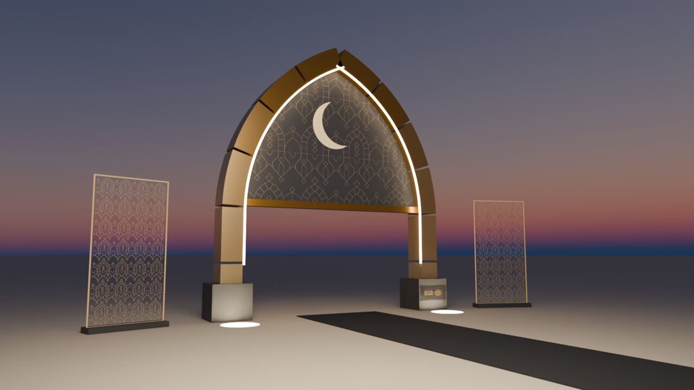
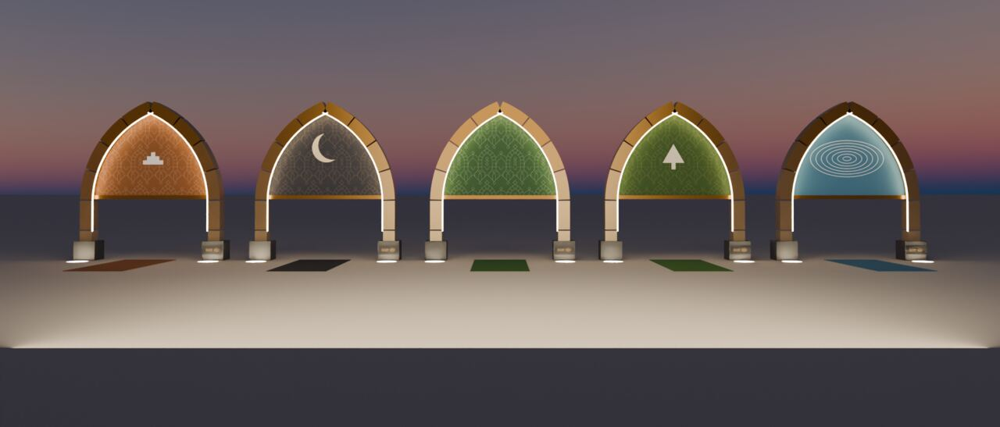
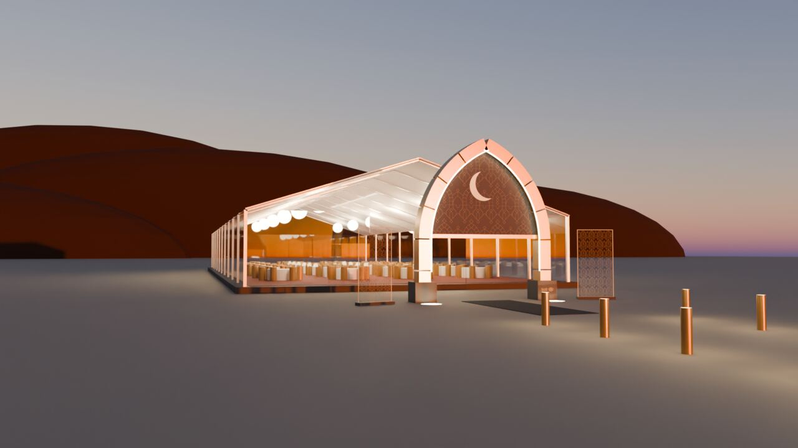
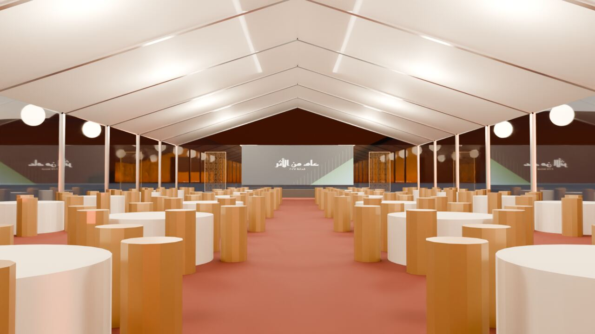
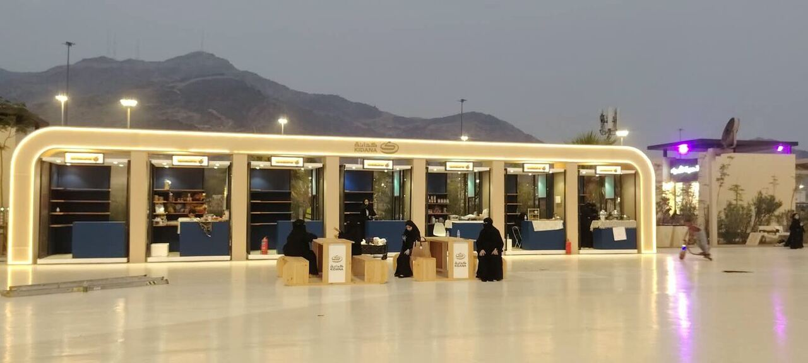
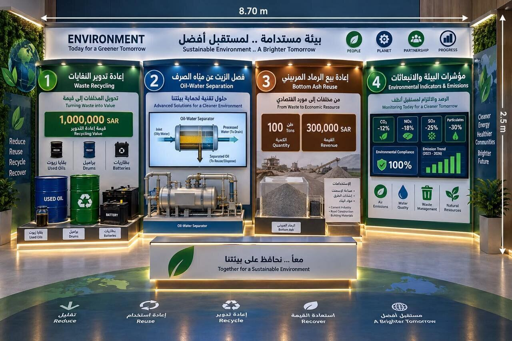

العرض الفني للاتفاقية الإطارية لإدارة وتنفيذ الفعاليات ومبادرات المسؤولية المجتمعية 2027م — مقدم من وكالة كندة للدعاية والإعلان.
تحميل العرض PDFتصفح الأقسامالقوس المدبب هو شكل هوية كدانة نفسها، وزخرفته مأخوذة من دليل الهوية حرفيًا. نصنع القوس مرة واحدة، ويتغير وجهه وممره مع كل فعالية.

12 قطعة ذهبية متدرجة، لوحة تاج تتبدل بمسامير ربع لفة، وشاشات جانبية مفرغة بزخرفة كدانة.

تجربة كاملة تبدأ من البوابة وتجتمع أختامها في جواز رقمي واحد.
الإفطار السنوي لكدانة: البوابة، ممر الفوانيس، الخيمة الزجاجية 20×50م، والداخل.




40 صفحة مرتبة على معايير التقييم الفني السبعة.
تحميل العرض الفني PDF